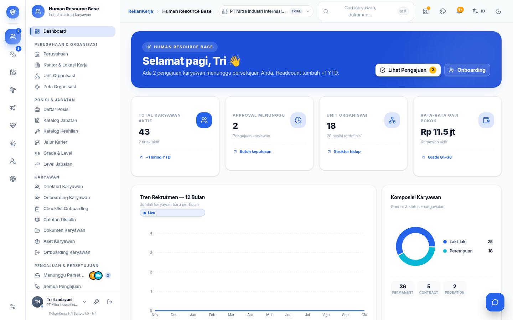

Pokok Bahasan 02 · Bukti
Isolasi yang Bisa Dibuktikan, Bukan Dijanjikan
check_circle
Koneksi terpisah per schema
Setiap permintaan dilayani
PrismaClient
milik tenant itu sendiri, bukan koneksi bersama.
check_circle
IDOR lintas tenant:
0
baris bocor
Uji otomatis memaksa query lintas schema dengan kredensial tenant lain, hasil nihil.
check_circle
Host subdomain terikat tenant
Sesi dari subdomain perusahaan lain ditolak meski kredensialnya cocok.
check_circle
Verifikasi dua browser paralel
Login dua tenant berdampingan, workspace masing-masing bersih tanpa kebocoran.

Dashboard per-company — angka ter-scope ke perusahaan aktif, bukan seluruh tenant.